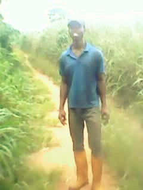
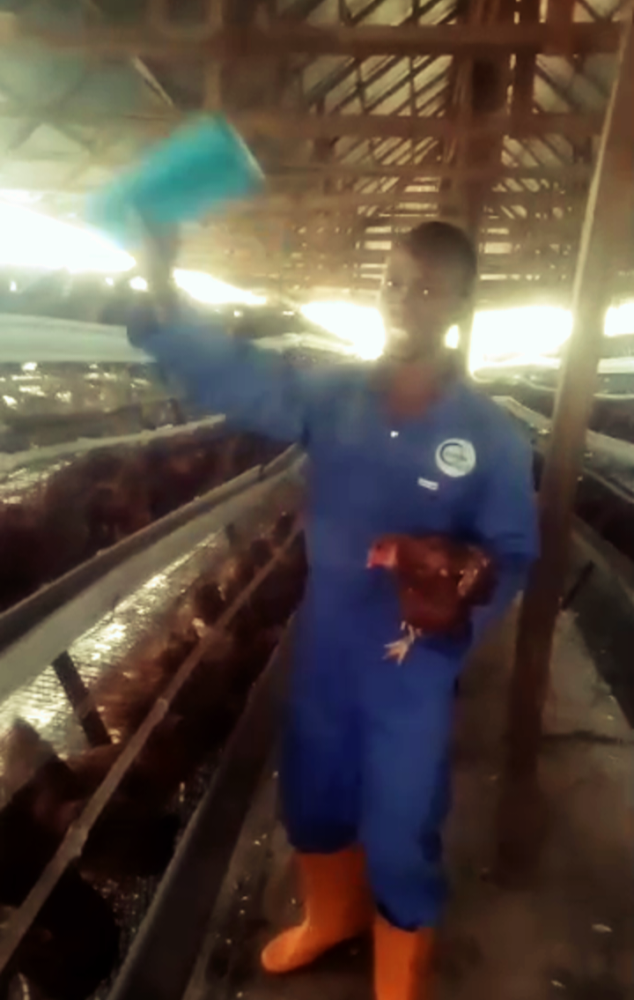
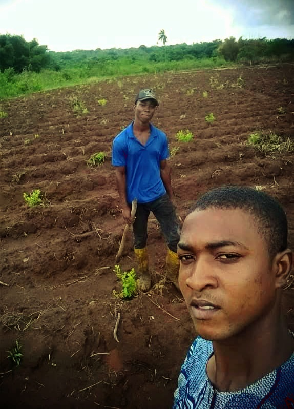

ABOUT US
Since 2017, we've dared to imagine a better way to farm, a better way to produce food, and a better future for agriculture.
That vision continues to guide C.G. Okafor Co. as we work across agriculture, food and technology. We bring different capabilities together with a shared focus: supporting farmers, strengthening food production and creating opportunities across the agricultural value chain.
Our journey is built on the belief that better farming contributes to better food systems, stronger communities and a more sustainable future.
OUR JOURNEY
Our History
Discover the journey, growth and businesses that have shaped C.G. Okafor Co.

C.G. Okafor Co.
Explore History →
Okafor Agriscience
Explore History →
Soileva
Explore History →
Okafor Farm Technology
Explore History →GET TO KNOW US
Frequently Asked Questions
Learn more about C.G. Okafor Co. and the businesses that make up our agricultural and food operations.
What is Okafor Agriscience?
Okafor Agriscience is an agricultural inputs and solutions business supporting farmers with crop protection, plant nutrition, quality seeds and animal health products.
Visit Okafor Agriscience →What is Okafor Farm Technology?
Okafor Farm Technology focuses on agricultural technology and modern farm systems that help improve farm operations, livestock management and productivity.
Visit Okafor Farm Technology →What is Okafor Grain & Oilseeds?
Okafor Grain & Oilseeds is focused on grain and oilseed trading, sourcing and value addition, connecting agricultural production with food and industrial markets.
Visit Okafor Grain & Oilseeds →What is Soileva Farms?
Soileva Farms is an agricultural production business involved in growing vegetables and producing food through farming activities that include poultry and rice.
Visit Soileva Farms →